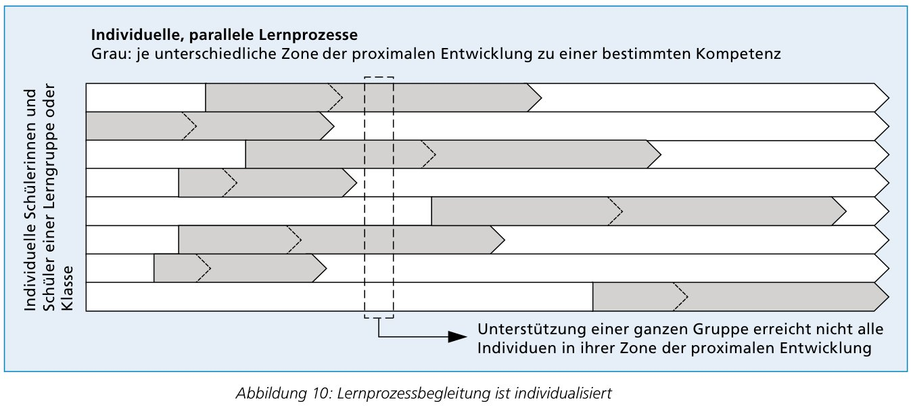
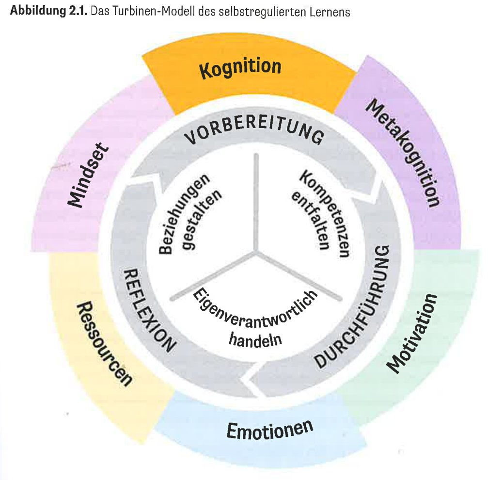
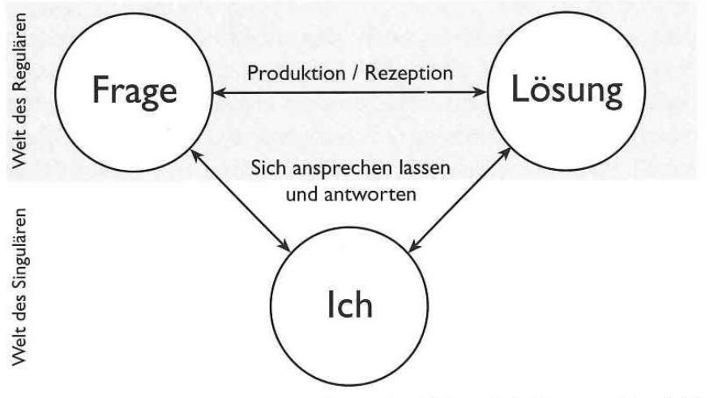

Was sagt die Wissenschaft? Theorien und Konzepte, Verknüpfungen, Spannungsfelder und Handlungsmöglichkeiten für die Praxis.
Worum es geht
Lernende einer Klasse stehen nie am selben Ort. Individuelle Lernbegleitung heisst, Denkwege und Lernbedingungen sichtbar zu machen, die Unterstützung darauf abzustimmen und zu prüfen, ob die Lernenden fachlich und in ihrer Selbstregulation weiterkommen.
Diese Seite verbindet zentrale Theorien – von Wygotskis Zone der nächsten Entwicklung über Scaffolding und Feedback bis zum selbstregulierten Lernen – mit Gesprächsmodellen, Werkzeugen und einem Planungs-Check. Du kannst sie von oben nach unten durcharbeiten oder über das Inhaltsverzeichnis gezielt springen.
«Ich weiss nicht, was machen. Können Sie mir helfen?»
Der Reflex ist, sofort zu erklären oder die Lösung zu zeigen. Die Forschung zur Lernbegleitung rät zu einem Zwischenschritt: zuerst verstehen, dann passend dosieren.
Wo genau stockt es? Sache, Strategie, Motivation, Gefühl oder Umfeld? → Diagnose
3
Was ist die kleinste Hilfe, die weiterbringt?→ Scaffolding
Leitgedanke
Individuelle Lernbegleitung macht Denkwege und Lernbedingungen sichtbar, stimmt die Unterstützung darauf ab und prüft, ob die Lernenden fachlich und in ihrer Selbstregulation weiterkommen.
So liest du diese Seite
Die Seite ist in vier Teile gegliedert: A Was ist es? · B Was muss ich verstehen? · C Wie gehe ich vor? · D Wo wird es schwierig? Über das Inhaltsverzeichnis kannst du jederzeit springen.
TheorieGedankengangSpannungsfeldPraxis
Alle Aussagen stützen sich auf die im Literaturverzeichnis genannten Quellen. Hinweise mit «eigene Synthese» verbinden mehrere Quellen. Originalabbildungen sind als Bildzitate gekennzeichnet und werden im Text besprochen; alle anderen Grafiken sind eigene Darstellungen, die ich mit Hilfe von Claude.ai oder ChatGPT erstellt habe.
Überblick
Wie die Konzepte zusammenhängen
Die Theorien stammen aus verschiedenen Traditionen: Entwicklungspsychologie, Lehr-Lern-Forschung, Heilpädagogik, Beratung und konstruktivistische Didaktik. Sie greifen aber ineinander. Klicke auf ein Konzept, um direkt dorthin zu springen.
Eigene Darstellung.
AWas ist es?Begriff, Phasen und Merkmale der Lernprozessbegleitung
A · Begriff
Lernprozessbegleitung: eine Phase im ganzen Lernprozess
Lernbegleitung findet überall statt, wo Menschen von anderen lernen. In der Schule meint sie eine bestimmte Phase, die in einen vollständigen Lernprozess eingebettet ist (Fraefel, 2018, S. 126).
Der Normalverlauf gleicht einer Lehre (Cognitive Apprenticeship; Collins, Brown & Newman, 1989): Anfangs wird viel gezeigt und gestützt, mit wachsender Vertrautheit braucht es immer weniger direkte Unterstützung.Fraefel, 2018, S. 126
Wer schliesst die Lücke?
Allievi können ihren Einsatz steigern und wirksamere Strategien nutzen. Möglich, aber unerwünscht: Ziele verwässern oder aufgeben. Lehrende können passende, herausfordernde Ziele setzen und mit Feedback und Strategien beistehen.Fraefel, 2018, S. 126
Gedankengang
Lernbegleitung hat ein Ziel: sich überflüssig machen. Karlen nutzt dafür ein Bild: Zu Beginn der Lernreise braucht es eine Lotsin; mit der Zeit übernehmen die Lernenden selbst das Steuer.Karlen, 2026, S. 16
A · Merkmale
Vier Merkmale guter Lernprozessbegleitung
Urban Fraefel beschreibt vier Merkmale. Zusammen erklären sie, warum Lernbegleitung anspruchsvoll ist und warum sie in jeder Unterrichtsform möglich sein muss.
1
individualisiert
Lernende haben unterschiedliche Voraussetzungen und brauchen je andere Unterstützung. Mit der ganzen Klasse ist Begleitung deshalb stark erschwert.
2
Scaffolds & Feedbacks
Lehrpersonen unterstützen mit Gerüsten, die den Graben zwischen aktuellem Können und Lernziel überbrücken.
3
setzt Diagnose voraus
Hilfreiche Scaffolds verlangen gute Kenntnis der aktuellen Lernprozesse: Sie müssen zu Stand, Schwierigkeiten und Bedürfnissen passen.
4
methodenunabhängig
Gute Begleitung ist in jeder Methode möglich, von direktiv bis offen, sofern individuelle Interaktionen stattfinden können.
Fraefel, 2018, S. 128–129
Gedankengang · Was folgt aus Merkmal 4?
Ob Lernende begleitet werden, entscheidet nicht die Unterrichtsform. Ein Wochenplan oder Lernatelier ist noch keine Lernbegleitung, und ein lehrergeleiteter Input schliesst sie nicht aus. Entscheidend ist, ob Zeit und Gelegenheit für individuelle Interaktion geplant sind. → SRL ist nicht SOL
[Scaffolds sind] Stützen, die den Schülerinnen und Schülern helfen, den Graben zwischen den aktuellen Fähigkeiten und den angestrebten Lernzielen zu überbrücken.Fraefel, 2018, S. 128 (vgl. Wood, Bruner & Ross, 1976)
BWas muss ich verstehen?Theorien und Konzepte, die Lernbegleitung begründen
B · Rahmentheorie
Wissen entsteht zuerst im Sozialen: die Zone der nächsten Entwicklung
Lew Wygotski (1896–1934) stellte fest, dass in der Entwicklung eines Kindes alles zuerst auf sozialer Ebene geschieht, bevor es im Innern Gestalt annimmt. Höhere geistige Funktionen beruhen auf realen Beziehungen zwischen Menschen (Fraefel, 2018, S. 127).
Die Zone der proximalen (nächsten) Entwicklung, auch «Lernfenster» genannt, ist die Distanz zwischen dem, was jemand allein erreichen kann, und dem, was er oder sie mit Anleitung oder mit fähigeren Peers meistert. Lernende und Fortgeschrittene handeln eine Zeit lang gemeinsam.Fraefel, 2018, S. 127, nach Vygotsky & Cole (1934/1978, S. 86)
Gedankengang
Die ZPE ist keine Eigenschaft der Person, sondern beschreibt das Verhältnis von Person, Aufgabe und verfügbarer Hilfe. Dieselbe Aufgabe kann für die eine Person «Konsolidieren» und für die andere «zu schwierig» sein. Hilfe wirkt nur im grauen Bereich.
Die vier Bereiche der Grafik
Bereits Gelerntesauffrischen · keine Hilfe nötig
Konsolidierenautomatisieren · mit Selbsthilfe oder wenig Hilfe erreichbar
Herausfordernde neue Zielemit Hilfe von anderen erreichbar: Lehrperson, Eltern, Peers
Zu schwierige Zieleauch mit Hilfe nicht erreichbar
Praxis · Sek I / Sek II
Beim Verstehen eines anspruchsvollen Textes braucht eine Person eine Begriffsklärung, eine andere einen Hinweis zur Struktur, eine dritte schon einen Transferauftrag. Auch ältere Lernende können in einem neuen Fachgebiet enge Anleitung brauchen.SitKo-Workshopguide, S. 4 (eigene Synthese)
B · Individuelle Lernfenster
Eine Klasse, viele Lernfenster

Bildzitat · Fraefel (2018), Lernprozesse begleiten, Abb. 10, S. 128. Jede Zeile ist eine lernende Person, grau ihr Lernfenster zu derselben Kompetenz. Das gestrichelte Rechteck steht für eine Unterstützung, die der ganzen Gruppe gilt.
Was immer die Lehrperson tut, sie wird nur einen Teil der Lernenden erreichen […].Fraefel, 2018, S. 128
Adaptiver Unterricht
Helmke & Weinert (1997) nennen adaptiven Unterricht «das aussichtsreichste unterrichtliche Konzept», um auf grosse, stabile Unterschiede zwischen Lernenden zu reagieren. Adaptivität entsteht durch Unterrichtsorganisation (z. B. Stationen, Planarbeit) oder durch situative Anpassung im Moment.Leuchter & Schwerzmann Humbel, in Berner, Fraefel & Zumsteg, 2018, S. 134
Gedankengang · drei Folgerungen
1
Individualisieren heisst, auf den Lernstand zu reagieren. Es ist kein Etikett für eine Unterrichtsform.
2
Wer adaptiv handeln will, muss zuerst wissen, wo jemand steht.
3
Die Planung braucht Zeitfenster für Einzelinteraktion und Aufträge für die anderen.
Leitfrage für die Planung
Wen erreicht meine geplante Hilfe, und wer braucht einen anderen Impuls? Beschreibe zwei Lernende mit unterschiedlichem Vorwissen und entwirf für beide je eine Unterstützung.SitKo-Workshopguide, S. 3
B · Scaffolding
Fördern, stützen, loslassen
Ein Gerüst (engl. scaffold) ist nur so lange sinnvoll, wie das Gebäude es braucht. Hilfen sollen die Herausforderung bearbeitbar machen, ohne den Denkprozess zu übernehmen, und werden mit wachsender Sicherheit zurückgenommen.
Eigene Darstellung.
Was zum Scaffolding gehört
Gliederung, die Komplexität reduziert
Fokussierungshilfen auf wichtige Aspekte
Denkanstösse, Hinweise auf ungelöste Fragen und Widersprüche
Aufforderung, Vermutungen mitzuteilen und zu prüfen
Aufforderung, Aussagen zu begründen und Lernwege zu reflektieren
Wichtige Äusserungen zusammenfassen und hervorheben
Möller (2006), in Berner, Fraefel & Zumsteg, 2018, S. 137
Die Lehrkraft sollte so viel Hilfe wie notwendig und so wenig Hilfe wie möglich anbieten […].Möller (2006) nach Reiser (2004), in Berner, Fraefel & Zumsteg, 2018, S. 137
Spannungsfeld
Möller hält es für naiv zu glauben, Handeln und Experimentieren allein führten zu verstandenem Wissen. Offene, entdeckende Lernformen gelingen nur mit passender Unterstützung (S. 137).
Praxis · Hilfen abstufen (eigene Synthese)
Für dieselbe Aufgabe drei bis vier Hilfen vorbereiten, von klein nach gross. Zuerst die kleinste anbieten.
1
Rückfrage
«Was hast du schon versucht?»
2
Fokus- oder Strategiehinweis
«Schau dir zuerst Abschnitt 2 an.»
3
Teilschritt modellieren
laut denkend vorzeigen
4
gemeinsam lösen
dann eine ähnliche Aufgabe allein
Prüffrage: Woran erkenne ich, dass eine Hilfe zurückgenommen werden kann?
nach SitKo-Workshopguide, S. 4 und 11; Möller (2006)
B · Diagnose und Förderung
Verstehen, bevor wir helfen
Tönnissen, Link, Hengartner & Hagmann-von Arx (2024) beobachteten in der Ausbildung, dass der diagnostische Prozess oft übersprungen und direkt zur Förderung übergegangen wurde. Ihre Antwort ist ein Kreislauf in Form einer «liegenden Acht».
Diagnose-Kreislauf
Fragestellung, ggf. Hypothese
Methoden wählen
anwenden, auswerten
Frage beantworten
theoriegeleitet interpretieren
Förder-Kreislauf
Entwicklungsbedarf priorisieren
Ziele formulieren
Massnahmen bei der Person und im Unterricht ableiten
Förderplanung
umsetzen
Wirkung evaluieren → zurück zur Diagnose
Eigene, vereinfachte Darstellung in Anlehnung an den Diagnostik-Förder-Kreislauf (Tönnissen et al., 2024, S. 304–307). Die Originalabbildung ist nicht wiedergegeben.
Passung statt Defizit
Lern- und Verhaltensschwierigkeiten werden als Passungsproblematik zwischen individuellen Voraussetzungen, Aktivität und Partizipation sowie Umweltfaktoren (z. B. Unterrichtsqualität) verstanden.Tönnissen et al., 2024, S. 305
Zwei Förderstrategien
remedial: fehlende Voraussetzungen bei der Person direkt aufbauen kompensatorisch: den Unterricht an die Bedürfnisse anpassennach Trautmann & Wischer (2007), in Tönnissen et al., 2024, S. 307
… auch die Stillen, die Zurückgezogenen, die Ängstlichen […], die ebenfalls hoch belastet sein können, aber oft wenig Aufmerksamkeit erfahren …Ahrbeck (2022, S. 260), zitiert in Tönnissen et al., 2024, S. 310
Transfer in den Regelunterricht
Das Modell stammt aus der Heil- und Sonderpädagogik und ersetzt keine spezialisierte Diagnostik. Als Denkfigur hilft es trotzdem: erst eine Frage formulieren, dann beobachten; nicht nur fragen «Was fehlt dem Kind?», sondern auch «Was erschwert der Unterricht?».
Kritik der Autor:innen selbst
Das Modell wirkt linear. In der Praxis springt man zurück, und Lernende können für verschiedene Aspekte an verschiedenen Punkten stehen (S. 310).
Praxis
Beobachtung gilt als «Königsdisziplin» der Diagnostik (S. 306). Sie geht in jedes pädagogische Handeln ein.
B · Formative Beurteilung
Lernstand erfahren, ohne zu prüfen
Das assessment wird erst dann formativ, wenn diese Informationen so genutzt werden, dass der Unterricht zu Gunsten der Schüler:innen verbessert wird.Fraefel, 2023, S. 138, nach Black & Wiliam (1998)
Gedankengang
Formativ ist keine Methode, sondern eine Verwendung. Eine Information über den Lernstand, die keine Konsequenz hat, ist Datensammlung. Darum: nur fragen, wenn Zeit für eine Reaktion eingeplant ist.
Ein Spektrum: von informell bis benotet
A · informell
Gespräche, Beobachtung, Produkte sichtenimmer · für die Lernenden
B · Klasse befragen
kurze schriftliche Befragungen (CATs)nach Bedarf · für die Lehrperson
C · unbenotet prüfen
Tests, Produkte, gezeigte Kompetenzenmehrmals pro Einheit
D · benotet prüfen
formell, unter fairen Bedingungenhöchstens einmal pro Einheit
A und B: formative assessment von Prozess und Fortschritt · C und D: summative Beurteilung. Eigene, vereinfachte Darstellung nach Fraefel, 2023, Tab. 8, S. 137 (in Anlehnung an Dolin et al., 2017).
✗ Was in der Regel nicht funktioniert
«Habt ihr das verstanden?» Lernende wissen oft nicht einmal, was sie nicht verstanden haben.
Handheben, Ampel, Daumen: binäre Minimalinformation, ein vages Stimmungsbild.
Ankreuzbögen: Statistik ohne klare Konsequenz.
Kurztests: erinnern an Prüfungen und erzeugen Druck.
Fraefel, 2023, S. 139
Was gehaltvolle Hinweise liefert
«Assessment on the fly»: beobachten, nachfragen, Produkte sichten
Der verwirrendste Punkt: «Was war der verwirrendste Punkt in dieser Stunde?» (schriftlich, kurz)
Nicht im Prüfungsmodus: Selbsteinschätzung zu Verstehen und Schwierigkeiten
Anonymer Briefkasten für Unbehagen, Lob, Wünsche
Fraefel, 2023, S. 138–140 (CATs nach Angelo & Cross, 1993)
Dilemma für Berufseinsteigende
Rückmeldungen der Klasse können verlangen, Tempo, Vorgehen oder Erklärungen sofort anzupassen. Das bedeutet mehr Aufwand und Unsicherheit. Fraefel rät, nur dann zu fragen, wenn genügend Zeit bleibt, den Verlauf zu überdenken (S. 140).
B · Feedback
Feedback, das Weiterlernen ermöglicht
Feedback sind Informationen zu Aspekten des Könnens oder Verstehens einer Person, von Lehrpersonen, Peers, Texten oder von sich selbst (Hattie & Timperley, 2007). Wirksam ist es, wenn es die richtige Ebene trifft und die richtigen Fragen stellt (Fraefel, 2018, S. 129).
Wohin?Ziele klären
Wie läuft es?Stand, Probleme, Fortschritt
Was nachher?Ausblick, nächste Schritte
AufgabeSachebene
Ist klar, was getan werden soll und wozu?klären, warum es sich lohnt
Bewältigen sie die Aufgabe? Wo liegt das sachliche Problem?sachliche Korrektur, Hinweise
Wie lässt sich das Gelernte anwenden, ausbauen?Anwendungsaufgabe zeigen
Strategienaufgabenbezogen
Welche Strategien sind hier zu lernen?besprechen, warum es wiederholt stockt
Wie werden Strategien angewendet, optimiert?Vorgehen zur Selbstkorrektur vorschlagen
Wozu befähigt die Strategie? Nächste Schritte?an anspruchsvollerem Problem üben
Selbstregulationüberwachen, steuern
Welche Schritte zu mehr Selbstregulation sind nötig?z. B. aktives Hilfesuchen
Was ermöglicht noch mehr Selbstständigkeit?gemeinsam herausfinden
Personnur mit Bezug!
Enthält die Aussage Informationen, die helfen, es künftig besser zu machen?Lob oder Tadel ohne Bezug zu Aufgabe oder Strategie sind praktisch wirkungslos.
Eigene, vereinfachte Darstellung nach Fraefel, 2018, Abb. 11, S. 130 (nach Hattie & Timperley, 2007). Gestrichelt: die zwei Felder, auf die sich im Alltag die meisten Feedbacks beschränken.
Befund aus dem Unterrichtsalltag
Die meisten Feedbacks betreffen nur zwei Felder: Stand und Probleme bei der Aufgabe und persönliche Bemerkungen ohne Informationsgehalt. Professionelle Feedbacks nutzen auch Ziele und Fortsetzungen sowie Strategien.Fraefel, 2018, S. 129
Collegamenti
ZPE: Feedback zeigt den nächsten erreichbaren Schritt.
SRL: Die Zeile «Selbstregulation» ist die Brücke zur Turbine.
Formativ: Feedback wirkt erst, wenn es genutzt werden kann.
Übung
Ordne eine eigene Rückmeldung einem Feld zu. Ergänze sie um einen überprüfbaren nächsten Schritt und eine Gelegenheit, ihn umzusetzen.SitKo-Workshopguide, S. 5
Ein Beispiel: vom Kommentar zur Weiterarbeit
Eine Schülerin (Sek I/II) hat den ersten Entwurf einer Erörterung abgegeben. Die Argumente sind gut, aber unverbunden aneinandergereiht. So kann Feedback auf den verschiedenen Ebenen klingen (eigene Beispiele zur Matrix):
Typisch, wenig hilfreich
«Gut gemacht, aber noch etwas durcheinander.»
Person und Aufgabe vermischt, keine Information darüber, was durcheinander ist und wie es besser wird.
Aufgabe
«Deine drei Argumente stimmen. Es fehlen Übergänge, die zeigen, wie sie zusammenhängen.»
Strategie
«Markiere in jedem Absatz den Kernsatz und schreib daneben: stützt, widerspricht, ergänzt?»
Selbstregulation
«Woran merkst du beim nächsten Text selbst, ob der rote Faden hält?»
Je weiter rechts, desto mehr Verantwortung bleibt bei der lernenden Person.
Strategien loben, nicht Talent
Positives, prozessorientiertes Feedback («Du hast eine gute Strategie gewählt») stärkt die Selbstwirksamkeit bei der Strategieanwendung.Karlen & Mejeh, 2026, S. 58–59
Entwicklungsperspektive
Ruf & Gallin geben im Lernjournal Rückmeldungen mit Häklein: ✓ erfüllt, ✓✓ eigenständige, persönliche Leistung, ✓✓✓ «Wurf». Misslingt etwas, gibt es eine zweite Chance.Ruf & Gallin, 2011, S. 46–47
Checkliste für jedes Feedback
Weiss die Person, wo sie steht?
Weiss sie, was sie als Nächstes tut?
Hat sie Zeit und Gelegenheit, es zu nutzen?
Betrifft es Aufgabe, Strategie oder Selbstregulation, nicht nur die Person?
B · Selbstreguliertes Lernen
Selbstregulation braucht Begleitung
Definition«Selbstreguliertes Lernen bezeichnet die Fähigkeit, je nach Lernsituation und -aufgabe verschiedene Vorbereitungs-, Überwachungs- und Steuerungsmassnahmen zu ergreifen, um mithilfe geeigneter Strategien die gewünschten Ziele zu erreichen.»Karlen & Mejeh, 2026, S. 43

Bildzitat · Karlen & Mejeh (2026), Abb. 2.1: Das Turbinen-Modell des selbstregulierten Lernens, S. 43 (in Anlehnung an Karlen & Held, 2025). In: Karlen, Y. (Hrsg.), Gewusst wie!
So ist die Turbine aufgebaut
1
Drei Phasen (innerer Ring, nach Zimmerman, 2000): Vorbereitung → Durchführung → Reflexion
2
Sechs Kompetenzaspekte (äusserer Ring): Kognition, Metakognition, Motivation, Emotionen, Ressourcen, Mindset, alle gleich zentral
3
Ziel (Zentrum): sich als wirksam erleben, Beziehungen gestalten, eigenverantwortlich handeln
Karlen & Mejeh, 2026, S. 42–46
Gedankengang
Kognition und Metakognition allein erklären Erfolg oder Misserfolg nicht. Wenn jemand «nicht weiterkommt», kann die Ursache auch in Gefühlen (Angst vor dem Versagen), in den Ressourcen (Lärm, Handy, keine Zeit) oder im Mindset («Ich bin halt nicht gut in Mathe») liegen. Die Turbine ist darum auch ein Diagnose-Raster.
Drei Phasen, drei Begleitfragen
VorbereitungAufgabe analysieren, Vorwissen aktivieren, Ziel setzen, Strategie wählen, Zeit und Lernort organisieren, sich einstimmen«Was ist dein Plan?»
DurchführungStrategien anwenden, Fortschritt überwachen, Konzentration halten, Frust und Überforderung regulieren, Hilfe suchen«Woran merkst du, dass es klappt?»
ReflexionZiel erreicht? Welche Strategien halfen? Ursachen zuschreiben, Schlüsse für das nächste Mal ziehen«Was machst du nächstes Mal gleich?»
Eigene Darstellung nach Karlen & Mejeh, 2026, S. 48–52 und Tab. 2.1–2.2; Begleitfragen: eigene Formulierungen.
Attribution: der heimliche Motor
Wer Erfolg auf eigene Anstrengung und wirksame Strategien zurückführt («Ich habe mich gut vorbereitet»), entwickelt höhere Selbstwirksamkeit (Weiner, 1986). In der Reflexion lohnt es sich deshalb, nach dem Warum zu fragen.Karlen & Mejeh, 2026, S. 51–52
Drei Formen von Strategiewissen
deklarativ: was eine Strategie ist prozedural: wie man sie anwendet konditional: wann und warum sie sinnvoll ist Dazu braucht es Strategiemotivation: Selbstwirksamkeit und die Überzeugung, dass sie hilft.Karlen & Mejeh, 2026, S. 56–58 (Pressley et al., 1987)
Strategien gezielt aufbauen
schrittweise einführen und modellieren
an einem Fachinhalt üben, Nutzen sichtbar machen
Lernende an der Auswahl beteiligen
Transfer auf andere Aufgaben ausdrücklich besprechen
Karlen & Mejeh, 2026, S. 56–59
B · Hürden beim Strategieeinsatz
«Sie wendet die Strategie einfach nicht an.» Warum?
Karlen & Mejeh unterscheiden drei typische Hürden. Von aussen sieht man bei allen dasselbe Verhalten, doch jede braucht eine andere Hilfe. Probiere den Entscheidungsbaum mit einem konkreten Fall aus deinem Unterricht aus.
Gelingt die Strategie, wenn du sie erklärst und ausdrücklich dazu aufforderst?
Gelingt auf Aufforderung: ja
Warum setzt sie die Strategie nicht von sich aus ein?
Mediationsdefizit
Es fehlt notwendiges Wissen oder eine Grundfähigkeit, deshalb bleibt auch eine gut gemeinte Erklärung wirkungslos. Beispiel: Sie markiert alles, weil sie Wichtiges noch nicht von Nebensächlichem trennen kann.
Hilfe: Vorwissen klären, ausführlich erklären, modellieren, gemeinsam üben.
Produktionsdefizit
Sie kennt und beherrscht die Strategie, nutzt sie aber nur auf Aufforderung. Oft denkt sie nicht daran oder sieht den Nutzen in der konkreten Situation nicht. Beispiel: Selbsterklärungen nur, wenn sie ausdrücklich verlangt werden.
Sie kennt die Strategie und ihren Nutzen, der Aufwand erscheint ihr aber zu gross. Sie greift lieber zu bequemeren, weniger wirksamen Methoden. Beispiel: lieber den Text nochmals lesen, statt eigene Fragen dazu zu formulieren.
Hilfe: den Nutzen an einer konkreten Aufgabe erleben und reflektieren lassen, den Einstieg entlasten.
Eigene Darstellung als Entscheidungsbaum nach Karlen & Mejeh, 2026, S. 64–65.
Gedankengang
Wer sofort «nochmals erklärt», hilft nur beim Mediationsdefizit. Beim Nutzungsdefizit verstärkt mehr Erklären eher den Eindruck, die Strategie sei aufwendig.
Leitfrage
Fehlt Verständnis, fehlt der selbstständige Einsatz oder fehlt die Bereitschaft, den Aufwand zu investieren? Am besten fragt man die lernende Person direkt.SitKo-Workshopguide, S. 7
B · Verbreitete Annahmen prüfen
Vier Annahmen und was die Forschung dazu sagt
Klicke auf eine Annahme, um zu sehen, was die Quellen dazu sagen.
«Bei uns gibt es ein Lernatelier, also lernen sie selbstreguliert.»Stimmt das?
SOL ist nicht SRL. Selbstorganisiertes Lernen ist eine Unterrichtsform mit Freiräumen. SRL sind die Kompetenzen, die man braucht, um darin und im klassischen Unterricht erfolgreich zu lernen.Karlen & Mejeh, 2026, S. 44
«Sie hat gute Noten, also kann sie lernen.»Stimmt das?
Schulischer Erfolg ist kein verlässlicher Hinweis, dass jemand gelernt hat, wie man lernt. Manche wissen, wie man Prüfungen besteht, aber nicht, wie man sich Wissen langfristig aneignet. Spätestens bei Übergängen geraten sie ins Straucheln.Karlen, 2026, Einleitung, S. 14–15
«Das kommt mit dem Alter von selbst.»Stimmt das?
Beim Übergang in die Sekundarstufe nimmt die Strategienutzung teilweise sogar ab, obwohl das Strategiewissen wächst. Für die Sek II sind die Befunde uneinheitlich. Gezielter Unterricht fördert SRL aber.Karlen & Mejeh, 2026, S. 66–67
«Man muss ihnen nur Freiraum geben.»Stimmt das?
Hohe Anforderungen an die Selbstorganisation ohne Strategieförderung stärken nicht die Selbstregulation, sondern erzeugen Lernfrust.Karlen, 2026, Einleitung, S. 17
SRL ganzheitlich fördern
Lernbegleitung beginnt mit der Diagnose von SRL-Kompetenzen und zeigt sich in Strategieimpulsen, Scaffolding und individuellem Feedback. Einzelne Lehrpersonen können jederzeit mit den inneren Kreisen beginnen, auch wenn es noch kein schulweites Konzept gibt.Karlen, 2026, S. 15–16
Grafik: eigene Darstellung nach Karlen, 2026, Abb. E.1, S. 16.
B · Dialogisches Lernen
Denkwege sichtbar machen: die Welt des Singulären

Bildzitat · Ruf & Gallin (2011), Dialogisches Lernen in Sprache und Mathematik, Bd. 1, S. 24. Oben die Welt des Regulären (Fragen und Lösungen der Fachleute), unten die Welt des Singulären (das Ich der lernenden Person).
Nicht die Kunst des Erklärens ist jetzt gefragt, sondern die Kunst des Zuhörens.Ruf & Gallin, 2011, S. 24
Kernidee
Zuerst interessiert, was zwischen der lernenden Person und dem Stoff geschieht: Vorwissen, Fragen, Vorstellungen, erste Versuche. Die Lehrperson stellt ihr Fachwissen vorerst zurück. Erst im Austausch nähern sich die singulären Positionen den Regularitäten des Fachs an.Ruf & Gallin, 2011, S. 24–25
Abstand: Defizit oder Chance?
Am Anfang liegen Person und Sache weit auseinander. Wer diesen Abstand so schnell wie möglich überwinden will, entwertet das Denken der Lernenden. Wer ihn als Spannungsfeld nutzt, gewinnt daraus die Dynamik des Lernens (S. 24).
Lernspuren statt nur Endprodukte
Das Lernjournal ist eine Werkstatt: Texte entstehen spontan und werden nicht korrigiert. Wege, Irrwege, Fragen und Strategien werden sichtbar. Rückmeldungen deuten diese Spuren aus einer Entwicklungsperspektive.Ruf & Gallin, 2011, S. 46–47
Lernspur-Fragen zu einer Aufgabe
Welche Frage ist bei dir entstanden?
Was hast du versucht?
Wo stockt dein Denken?
Welche Rückmeldung würde dir weiterhelfen?
SitKo-Workshopguide, S. 10
Verknüpfung
Das Singuläre ist der Ort der Diagnose: Was Lernende im Journal oder Gespräch zeigen, macht ihre Zone der nächsten Entwicklung sichtbar. Offenheit am Anfang heisst nicht, fachliche Ansprüche aufzugeben.
B · Haltung
Ermöglichen statt erzeugen
Lehrende können zwar belehren, doch die Aneignungsbewegung des lernenden Individuums folgt eigenen Mustern […].Arnold & Schön, 2019, S. 53. Der Mensch ist demnach «zwar lernfähig, aber auch unbelehrbar» (ebd., nach Arnold & Siebert, 1995).
Erzeugungsdidaktik
linear, fremdorganisiert, vorhersagbar
stellvertretende Erschliessung
Planung und Kontrolle von Lehrschritten
lehren, vermitteln, führen
Nachvollzug vorgegebenen Wissens
Ermöglichungsdidaktik
nichtlinear, selbstorganisiert, offen
selbstständige Erschliessung
Begleitung von Lernprojekten
begleiten, beraten, unterstützen
Konstruktion reflexiven Wissens
Eigene, gekürzte Darstellung nach Arnold & Schön, 2019, Tab. 10, S. 54 (nach Arnold & Pätzold, 2002). Die Gegenüberstellung ist ein Reflexionsmodell; in der Praxis gibt es Mischformen (S. 89).
Kompetenzen von «Lernermöglichern»
Umgang mit Unsicherheit: gerade in unsicheren Phasen entfalten sich Aneignungsdynamiken
Wirkungsoffenheit: Lerneffekte lassen sich nicht sicher bewirken
Lernarrangement: vielfältige Lernwege eröffnen
Lernbegleitung: sich zurücknehmen, Ressourcenperson sein
Beobachterhaltung: eigene verzerrende Interventionen erkennen
Arnold & Schön, 2019, Tab. 15, S. 68 (nach Arnold, 2003)
Drei Grundbedürfnisse
Nach der Selbstbestimmungstheorie (Deci & Ryan) entscheidet nicht die Organisationsform über den Lernerfolg, sondern ob ein Setting Kompetenz, Autonomie und soziale Eingebundenheit erlebbar macht.Arnold & Schön, 2019, S. 90
Wichtig
Auch Ermöglichungsdidaktik heisst nicht «laufen lassen»: Lernende sollen selbst entscheiden können, ob sie eine detaillierte Anleitung brauchen. Und sie brauchen Feedback.Arnold & Schön, 2019, S. 90
SPASS: fünf Kriterien für lebendiges, nachhaltiges Lernen
Arnold bündelt fünf Kriterien als Reflexionshilfe für die eigene Planung. Sie sind kein Rezept und kein Wirkungsbeweis, sondern Fragen an das eigene Angebot.
S
selbstgesteuert
Lernende bestimmen Wege mit und prüfen Ergebnisse selbst. Die Lehrperson ist prozessverantwortlich.
P
produktiv
Vorwissen wird eingebunden; Raum für Neugier und Perspektivenwechsel.
A
aktivierend
konkrete Aufträge; Lösungswege selbst planen, durchführen, prüfen.
S
situativ
Bezug zur Situation der Lerngruppe; Praxisbeispiele und Transfer.
S
sozial
Wertschätzung, Zeit für Fragen und Feedback, Emotionen wahrnehmen, kooperieren.
Eigene, gekürzte Darstellung nach Arnold & Schön, 2019, Tab. 22, S. 108 (nach Arnold, 2012a).
Eigenverantwortung ≠ Verantwortung abgeben
Die Lehrkraft gibt nach und nach didaktische Entscheidungen ab, bleibt aber verantwortlich für ihr Angebot und prüft, ob es die Handlungsmöglichkeiten der Lernenden tatsächlich erweitert.Arnold & Schön, 2019, S. 91
Handle stets so, dass du die Anzahl der Möglichkeiten vergrösserst!Heinz von Foerster (1988), zitiert in Arnold & Schön, 2019, S. 92
Übung zur eigenen Planung
Wähle zwei Kriterien, die deine Planung schon erfüllt, und begründe sie an einer konkreten Lernhandlung. Ergänze ein drittes Kriterium und überlege, welche Begleitung es dafür braucht.SitKo-Workshopguide, S. 12
B · Was Lehrpersonen dafür brauchen
Lernbegleitung ist eine orchestrierte Kompetenz
Professionelle Lernbegleitung entsteht aus mehreren Kompetenzbereichen, die sich überlagern. Entscheidend ist, wie gut die Lehrperson sie je nach Bedarf orchestrieren kann (Fraefel, 2018, S. 131).
Fachdidaktische Kompetenz
Sache und Struktur der Aufgaben
typische Schwierigkeiten, Zeitaufwand
vielfältige Erklärstrategien
Problemlösestrategien
Diagnostische Kompetenz
Lernstand erkennen
Lernschwierigkeiten erkennen
Lernpotenzial erkennen
setzt Fachdidaktik voraus
Kommunikative und soziale Kompetenz
psychologisches Wissen
Wissen über Feedback
Prioritäten setzen
den richtigen «Ton» treffen
Kompetenz der Lernprozessbegleitung
passende, herausfordernde Lernziele setzen
Adaptivität; das richtige Niveau treffen
korrekte Feedbacks zu Aufgaben und Strategien
relevante Ebenen erkennen
sprachlich angemessen intervenieren
Wirkung des Feedbacks abschätzen
Eigene Darstellung nach Fraefel, 2018, Abb. 12, S. 131.
Zusammenarbeit im Team, sorgfältige Stufenübertritte
Bildungsdirektion Kanton Zürich (2017), in Berner, Fraefel & Zumsteg, 2018, S. 136
Gedankengang für die Ausbildung
Am Anfang des Berufs kann man nicht alles gleichzeitig. Hilfreich ist, einen Bereich bewusst zu üben, z. B. eine Woche lang nur Strategie-Feedback zu geben, und die anderen mitlaufen zu lassen. Fraefel nennt die Lernbegleitung bewusst eine komplexe und anspruchsvolle Tätigkeit.
CWie gehe ich vor?Gespräche, Handlungszyklus, Werkzeuge und Planungs-Check
C · Das Lernbegleitungsgespräch
Ein Lernbegleitungsgespräch strukturieren: GROW
Ein lösungsorientiertes Gespräch ist kein nettes Plaudern, bei dem das Ziel aus dem Blick gerät, sondern klar strukturiert (Kremers & Schlüter, 2018, S. 25). Das GROW-Modell nach Whitmore gliedert es in vier Phasen.
G
Goal · Ziel klären
Orientierungsphase: Kontakt, Zeitrahmen, Anliegen
Was ist dein Thema? Was soll am Schluss erreicht sein?
R
Reality · Ist-Situation
Klärungsphase, meist die längste
Wo genau liegen die Probleme? Was hat dazu geführt?
O
Options · Möglichkeiten
Lösungsideen sammeln und prüfen
Welche Möglichkeiten gibt es? Was spricht jeweils dafür und dagegen?
W
Will · Handlungsplan
konkrete nächste Schritte festlegen
Was ist für dich das Ergebnis? Was sind deine nächsten Schritte?
Eigene Darstellung nach Kremers & Schlüter, 2018, S. 25–27 (GROW nach Whitmore, 2006).
Wer verantwortet was?
Lehrperson (Coach): den Prozess, also Raum, Zeit, Struktur, Wertschätzung, Ressourcenorientierung und gute Fragen. Lernende (Coachee): den Inhalt: mein Thema, mein Ziel, meine Lösung, mein nächster Schritt.Kremers & Schlüter, 2018, S. 9–10
Beratung in fünf Phasen
Beziehung aufbauen
Anliegen aus Sicht der Lernenden konkretisieren
Beratungs- und Lösungsebene finden
Impulse geben, Gewohnheiten durchkreuzen
mit konkretem Ergebnis abschliessen
Arnold & Schön, 2019, S. 69 (nach Brüggemann et al., 2014). Fast deckungsgleich mit GROW, betont aber den Kontakt.
Beraten und bewerten
Kremers & Schlüter raten, Beratung und Bewertung möglichst zu trennen (S. 25). Wo dieselbe Lehrperson beides tut: Zweck und Verwendung der Gesprächsinformationen offen klären. Arnold & Schön: Beratung steht in einem Spannungsverhältnis zur Mündigkeit (S. 69).
Praxis · Kurzform im Unterricht (3–5 Minuten)
G «Was willst du heute fertig haben?» → R «Zeig mir, wo du stehst. Was hast du schon versucht?» → O «Was könntest du jetzt tun? Was noch?» → W «Was machst du als Erstes? Wann schaue ich wieder vorbei?» Beobachtungsfrage für Übungen: Wird zuerst verstanden oder sofort geraten? Ist der nächste Schritt konkret und von der lernenden Person mitgetragen?eigene Verdichtung nach Kremers & Schlüter, 2018; Beobachtungsfrage: SitKo-Workshopguide, S. 9
C · Lernhindernisse verstehen
Was steckt hinter «Ich kann das nicht»?
Kremers & Schlüter zeigen ein Lerncoaching mit einer Schülerin, die vor jeder Klassenarbeit verzweifelt. Das Selbstmanagement-Prozess-Modell trennt vier Bereiche und macht so sichtbar, dass es nicht nur um Lerntechnik geht.
1 · Auslösende Situation
Abend vor der Klassenarbeit, nach 20 Uhr · Nachbar mit lauter Musik · Bruder kommt dreimal rein · WhatsApp-Lerngruppe pingt dauernd · Schreibtisch voller Bücher
2 · Emotion und Körper
Wut auf mich selbst · Müdigkeit, brennende Augen · Verzweiflung: Wo fange ich an? · früher stolz, jetzt Angst zu versagen
3 · Kognition (Gedanken)
«Da liegt ein Riesenhaufen Arbeit.» · «Das schaffe ich nie.» · «Im Unterricht sah es einfacher aus.» · «Ich höre erst auf, wenn ich es kann, und wenn es Mitternacht wird.»
4 · Bisherige Strategien
abschreiben, abdecken, aufsagen · erst am Vorabend lernen · Internetrecherche, Videos · WhatsApp-Gruppe: Austausch und Ablenkung zugleich
Eigene Darstellung des Fallbeispiels nach Kremers & Schlüter, 2018, S. 84–86 (gekürzt, sinngemäss).
Die Lehrperson braucht Wissen über Lernstrategien. Gleichzeitig soll sie der Schülerin zutrauen, nur jene Lösungen zu wählen, die sie realistisch und motiviert umsetzen kann. Wenn sie abends lernen will, ist das ihr Weg (S. 85).
Verknüpfung zur SRL-Turbine
Die vier Felder treffen genau die Aspekte, die Karlen & Mejeh über die Kognition hinaus betonen: Ressourcen (Störungen), Emotionen (Angst), Mindset («schaffe ich nie») und Kognition (wenig wirksame Strategien). Das Gespräch ist zugleich Diagnose und Förderung.
🌱Prinzip: Selbstwirksamkeit stärken, Ressourcen und Erfolge hervorheben, ermutigen und den Weg der kleinen Schritte gehen (Kremers & Schlüter, 2018, S. 85).
C · Synthese
Sechs Schritte der Lernbegleitung
Die Quellen lassen sich zu einem Handlungszyklus verdichten (eigene Synthese, nach den Leitideen des SitKo-Workshopguides, S. 1). Er ist kein starres Ablaufschema: Wie beim Diagnostik-Förder-Kreislauf springt man in der Praxis vor und zurück.
1 Verstehen, bevor wir helfen. Vorwissen, Denkwege, Strategieeinsatz, Ressourcen und Barrieren erkunden; Person und Unterrichtsbedingungen betrachten. → Diagnose
2 Unterstützung passend dosieren. Aufgaben und Hilfen auf die ZPE abstimmen; bei wachsender Kompetenz zurücknehmen. → Scaffolding
3 Feedback in Weiterarbeit übersetzen. Ziel, Stand und nächsten Schritt klären; Aufgabe, Vorgehen und Selbstregulation ansprechen. → Feedback
5 Wirkung prüfen und nachsteuern. Beobachtbare Anzeichen für Fortschritt festlegen und die Ergebnisse nutzen. → formativ
Im Zentrum: Lernende beteiligen. Zuhören, Lernspuren nutzen, Anliegen klären, Schritte gemeinsam vereinbaren. → Dialog
C · Toolbox
Acht Werkzeuge für den Unterricht
Verstehen
Der verwirrendste Punkt
Am Ende einer Sequenz schriftlich: «Was war der verwirrendste Punkt?» Antworten sichten und in der nächsten Stunde darauf reagieren.Fraefel, 2023, S. 140
Verstehen
Lernspur-Fragen
Aufgabe ergänzen um: Welche Frage ist entstanden? Was hast du versucht? Wo stockt dein Denken? Welche Rückmeldung hilft dir?Ruf & Gallin; SitKo-Guide, S. 10
Dosieren
Hilfen-Treppe
Für eine Kernaufgabe drei bis vier abgestufte Hilfen vorbereiten: Rückfrage, Hinweis, Modellieren, gemeinsam lösen. Immer mit der kleinsten beginnen.nach Möller (2006); SitKo-Guide, S. 4
Dosieren
Strategie-Check
Wird eine Strategie nicht genutzt: Mediations-, Produktions- oder Nutzungsdefizit? → EntscheidungsbaumKarlen & Mejeh, 2026, S. 64–65
Rückmelden
Feedback-Matrix
Eigene Rückmeldungen einem Feld zuordnen. Fehlen Ziele, Ausblick oder Strategien? Um einen überprüfbaren nächsten Schritt ergänzen.Fraefel, 2018, S. 130; SitKo-Guide, S. 5
Selbstregulation
Drei Phasenfragen
Vorher: «Was ist dein Plan?» Während: «Woran merkst du, dass es klappt?» Nachher: «Was half, was machst du nächstes Mal gleich?»nach Karlen & Mejeh, 2026, S. 48–52
Gespräch
GROW in 5 Minuten
Ziel → Ist-Situation → Optionen → nächster Schritt. Die Lehrperson führt den Prozess, die lernende Person den Inhalt.Kremers & Schlüter, 2018, S. 26–27
Gespräch
Vier-Felder-Blick
Bei Blockaden gemeinsam notieren: Situation, Gefühle, Gedanken, bisherige Strategien. Dann Lösungen pro Feld suchen.Kremers & Schlüter, 2018, S. 86
Vorsicht
Werkzeuge ersetzen nicht die Haltung. Ein GROW-Gespräch, in dem die Lehrperson das Ziel schon kennt und nur noch «abfragt», ist kein Coaching. Eine Feedback-Matrix, die nie zu Weiterarbeit führt, ist kein formatives Feedback.
C · Planungs-Check
Die eigene Unterrichtsplanung auf Lernbegleitung prüfen
Acht Fragen, direkt auf eine Lektion oder Unterrichtseinheit anwendbar (eigene Synthese aus den Quellen, aus dem SitKo-Workshopguide, S. 11). Hake ab, was deine Planung schon abdeckt: 0 von 8
Verknüpfung
Frage 2 und 7 bilden den Diagnostik-Förder-Kreislauf ab, Frage 3 und 4 Scaffolding und Feedback, Frage 5 die SRL-Turbine, Frage 6 Dialog und Ermöglichungsdidaktik.
Tipp für Praktika
Nicht alle acht Fragen in jeder Lektion: Pro Planung zwei Fragen bewusst vertiefen und in der Nachbesprechung auswerten.
DWo wird es schwierig?Spannungsfelder, die sich nicht auflösen, aber gestalten lassen
D · Antinomien im Handeln
Sieben Spannungsfelder
Lernbegleitung bewegt sich zwischen Polen, die beide berechtigt sind. Die Kunst liegt nicht darin, einen Pol zu wählen, sondern die Balance situativ und begründet zu finden (Zusammenstellung: eigene Synthese aus den Quellen). Probier es aus: Denk an eine konkrete Situation aus deinem Unterricht und schiebe den Regler dorthin, wo du gehandelt hast.
helfen, stützenloslassen
so viel wie nötig, so wenig wie möglich
Helfen kann abhängig machen. Scaffolds sollen ausgeblendet werden (Fraefel); Beratung steht in Spannung zur Mündigkeit (Arnold & Schön, S. 69). → Hilfen abstufen, Rücknahme planen.
die einzelne Persondie ganze Klasse
Was tun die anderen, während ich begleite?
Gruppenhilfe trifft nur einen Teil der Lernfenster (Fraefel, 2018, S. 128), Einzelbegleitung kostet Zeit für alle. → Aufträge planen, die selbstständiges Arbeiten erlauben; Peers als Helfende einbeziehen.
singulär, offenregulär, Fachnorm
eigene Denkwege würdigen und fachlich weiterführen
Zuhören statt sofort korrigieren (Ruf & Gallin, S. 24), ohne die fachlichen Ansprüche aufzugeben. → zuerst Lernspur, dann Austausch, dann Konsens (Ich–Du–Wir).
beratenbewerten
Vertrauen ↔ Beurteilungsauftrag
Wer offen über Schwierigkeiten spricht, riskiert eine schlechtere Note. Kremers & Schlüter raten zur Trennung (S. 25); Fraefel trennt formativ und benotet (2023, S. 137). → Rollen und Verwendung der Informationen offenlegen.
FremdsteuerungSelbststeuerung
Struktur geben, um Freiheit zu ermöglichen
Freiraum allein erzeugt Lernfrust (Karlen, 2026, S. 17); in der Praxis gibt es immer Mischformen (Arnold & Schön, S. 89). → Freiräume mit Strategieförderung koppeln; die Steuerung schrittweise übergeben.
sofort handelnerst verstehen
Handlungsdruck ↔ Diagnose
Diagnose wird oft übersprungen (Tönnissen et al., S. 304), und eine Rückmeldung der Klasse verlangt sofortige Anpassung (Fraefel, 2023, S. 140). → eine Rückfrage vor jeder Hilfe; Befragungen nur, wenn Zeit für eine Reaktion bleibt.
planenoffen bleiben
Planbarkeit ↔ Wirkungsoffenheit
Lernen lässt sich nicht erzeugen (Arnold & Schön, S. 53), informelle Diagnose ist im Detail nicht planbar (Fraefel, 2023, S. 138). → Gelegenheiten planen (Zeitfenster, Diagnosefenster, abgestufte Hilfen), nicht die Wirkung.
Warum «Antinomien»?
Die Spannungen sind keine Fehler, die man mit der richtigen Methode beseitigt. Sie gehören zur Struktur pädagogischen Handelns. Professionell ist, sie zu erkennen, zu benennen und Entscheidungen zu begründen, zum Beispiel im Unterrichtsentwurf oder im Mentoratsgespräch.
Reflexionsübung
Wähle zwei Achsen. Was spricht für die Position, die du gewählt hast? Was hätte die Gegenposition ermöglicht? Was würdest du nächstes Mal verschieben, und woran würdest du merken, ob es wirkt?
Abschluss
Das Wichtigste in fünf Sätzen
1
Lernen geschieht zuerst im Austausch; Hilfe wirkt nur im Lernfenster, und das ist für jede Person woanders.
2
Gute Hilfe ist so klein wie möglich und wird zurückgenommen, sobald sie nicht mehr nötig ist.
3
Feedback wirkt, wenn es Ziel, Stand und nächsten Schritt klärt und Strategien statt Personen anspricht.
4
Selbstregulation kommt nicht von selbst: Strategien, Motivation, Gefühle und Ressourcen brauchen Begleitung.
5
Zuerst verstehen, dann handeln, dann prüfen, ob es wirkt, und zwar gemeinsam mit den Lernenden.
Fragen an mich als Lehrperson
Haltung und Verantwortung
Wo stärke ich die Lernenden in ihrer Eigenverantwortung, und wo könnte ich mehr Partizipation zulassen?
Wie gehe ich mit Lernenden um, die die Verantwortung für ihr Lernen auf mich «abladen»?
Wie schaffe ich es, dass Lernende ihre Erwartungen und Sichtweisen offenlegen?
Arnold & Schön, 2019, S. 92–93
Selbstreguliertes Lernen
Wie kommuniziere ich, warum Strategien ein wichtiger Teil des Lernens sind?
Welche Strategien nutze ich selbst, und was bedeutet das für meine Rolle?
Wie spiegelt sich mein «Warum» von SRL in Zielen, Aufgaben und Feedback?
Karlen, 2026, S. 27
Meine Praxis
Welche Feedback-Felder nutze ich häufig, welche fast nie?
Wann habe ich zuletzt eine Hilfe gegeben, ohne vorher zu fragen, was die Person schon versucht hat?
Welche stillen Lernenden habe ich diese Woche nicht wahrgenommen?
eigene Fragen nach Fraefel; Tönnissen et al.
«Ich weiss nicht, was machen. Können Sie mir helfen?»
Die vielleicht wirksamste erste Antwort ist eine Frage: «Zeig mir, wo du stehst. Was hast du schon versucht?» Damit beginnen Diagnose, Beziehung und Selbstregulation zugleich.
Anhang
Literatur und Bildnachweis
Hauptquellen
Arnold, R. & Schön, M. (2019). Ermöglichungsdidaktik. Ein Lernbuch. Bern: hep.
Fraefel, U. (2023). Erfolgreichen Unterricht planen. Pragmatisch, praktisch, professionell (Kap. 10: Bilanzierung und Überprüfung). Münster: Waxmann (UTB).
Fraefel, U. (2018). Lernprozesse begleiten. In H. Berner, U. Fraefel & B. Zumsteg, Didaktisch handeln und denken. Mit Fokus auf angeleitetes und selbstständiges Lernen (Kap. 6, S. 123–138). Bern: hep.
Karlen, Y. (Hrsg.). (2026). Gewusst wie! Selbstreguliertes Lernen im Schulalltag verankern. Bern: hep. Darin: Karlen, Y., Einleitung (S. 13–17), und Karlen, Y. & Mejeh, M., Kap. 2: Was ist selbstreguliertes Lernen? (S. 39–67).
Kremers, T. & Schlüter, N. (2018). Coaching in der Schule. Ein Praxisbuch für lösungsorientierte Beratung. Essen: Neue Deutsche Schule Verlagsgesellschaft.
Ruf, U. & Gallin, P. (2011). Dialogisches Lernen in Sprache und Mathematik. Band 1: Austausch unter Ungleichen. Seelze: Kallmeyer/Klett.
Tönnissen, L., Link, P.-C., Hengartner, O. & Hagmann-von Arx, P. (2024). Der Diagnostik-Förder-Kreislauf in der Heil- und Sonderpädagogik. Zeitschrift für Heilpädagogik, 75(7), 303–311.
In den Hauptquellen zitiert (Sekundärverweise)
Black, P. & Wiliam, D. (1998) · Collins, A., Brown, J. S. & Newman, S. E. (1989) · Deci, E. L. & Ryan, R. M. (1993) · Hattie, J. & Timperley, H. (2007). The power of feedback. Review of Educational Research, 77(1), 81–112 · Helmke, A. & Weinert, F. E. (1997) · Möller, K. (2006) · Reiser, B. (2004) · Vygotsky, L. S. & Cole, M. (1978). Mind in society · Whitmore, J. (2006) · Wood, D., Bruner, J. S. & Ross, G. (1976) · Zimmerman, B. J. (2000). Die vollständigen Angaben finden sich in den Literaturverzeichnissen der Hauptquellen.
Vier Originalabbildungen sind als Bildzitate (Art. 25 URG) mit Quellenangabe wiedergegeben und werden im Text besprochen: Fraefel, 2018, Abb. 9 und 10; Karlen & Mejeh (2026), Abb. 2.1; Ruf & Gallin (2011), S. 24. Alle übrigen Grafiken sind eigene Darstellungen, die ich mit Hilfe von Claude.ai oder ChatGPT erstellt habe, teils in Anlehnung an die genannten Quellen.